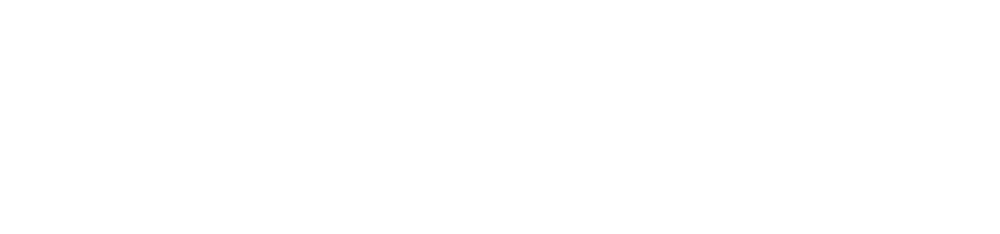
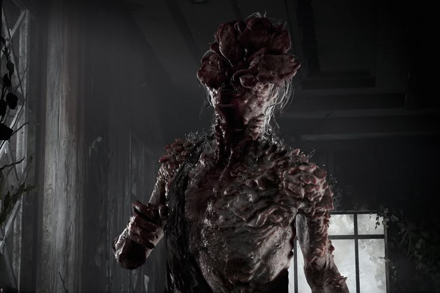
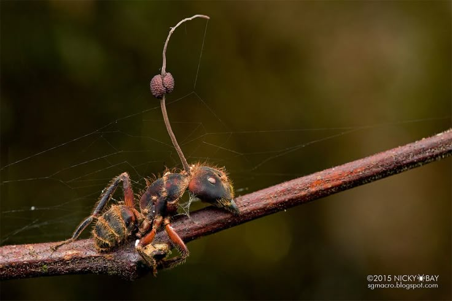

A franquia The Last of Us não é apenas conhecida por sua narrativa envolvente e personagens marcantes — o jogo também possui diversas curiosidades fascinantes que enriquecem ainda mais sua experiência. Entre as curiosidades mais interessantes:
🎙️ Os diálogos de fundo entre personagens mudam conforme suas ações, criando uma sensação mais orgânica de companheirismo.

🥬 Os sons dos estaladores foram criados usando frutas e vegetais esmagados, como laranjas e repolhos.
🎬 O jogo foi totalmente capturado com motion capture, incluindo expressões faciais, o que contribui para a qualidade cinematográfica.
🧩 A mecânica de jogo foi inspirada em jogos como "Ico" e "Shadow of the Colossus", ambos da Team Ico.

📚 O fungo Cordyceps, que causa a infecção no jogo, é inspirado em um fungo real que afeta insetos